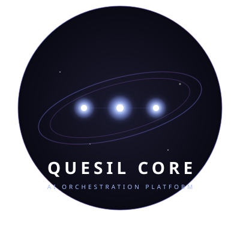
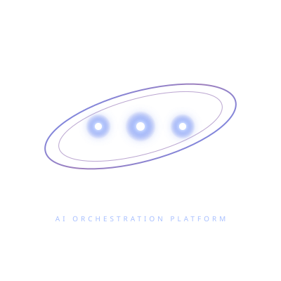
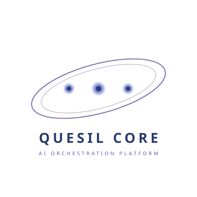

🌌 Quesil Core - Kit de Logo
1. Logo Principal (Circular)

2. Logo Horizontal

3. Favicon (3 Estrelas)
4. Versão Dark (Fundo Transparente)

5. Versão Light (Para fundos claros)

6. Versão Animada (CSS)